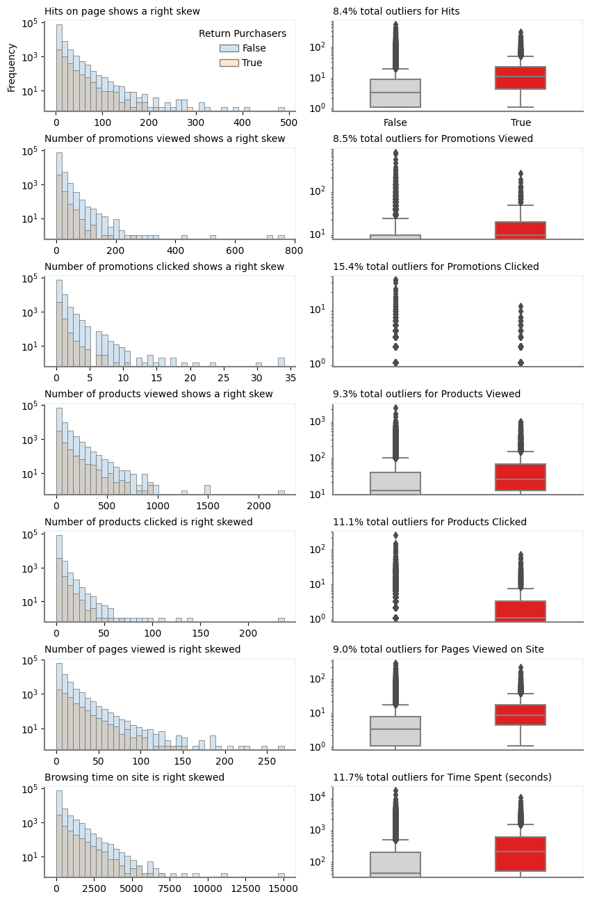
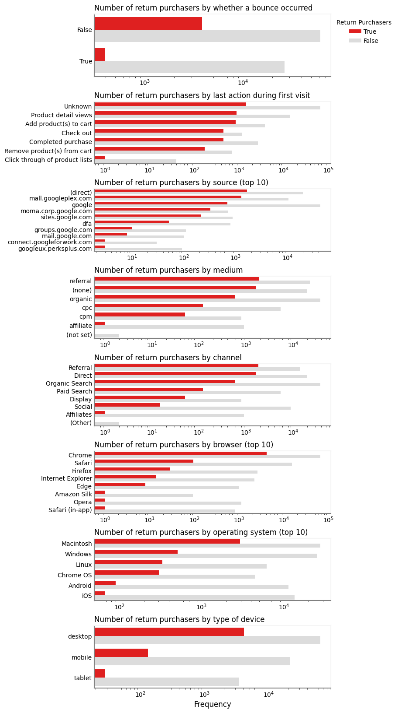
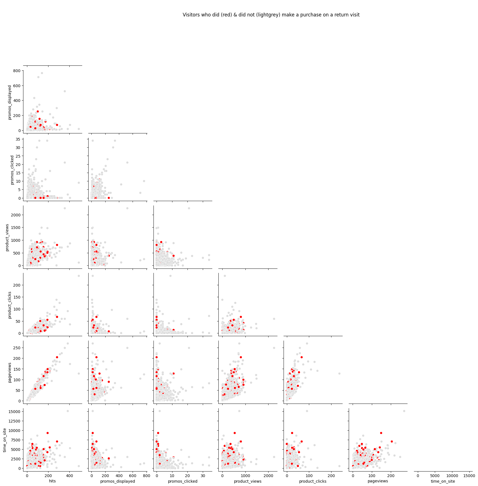
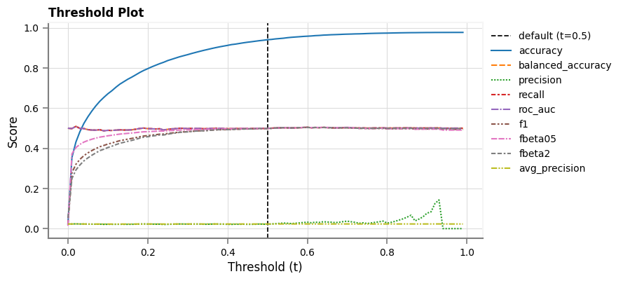

# 1. start and end dates
train_start_date = "20160901"
train_end_date = "20161231"
val_start_date = "20170101"
val_end_date = "20170131"
test_start_date = "20170201"
test_end_date = "20170228"
# 2. categorical column
categorical_features = [
"bounces",
"last_action",
"source",
"medium",
"channelGrouping",
"browser",
"os",
"deviceCategory",
]
# 3. categorical columns present as integers
categorical_features_ints = ["bounces"]
# 4. numerical columns
numerical_features = [
"hits",
"promos_displayed",
"promos_clicked",
"product_views",
"product_clicks",
"pageviews",
"time_on_site",
]
# 5. datetime features
datetime_features = ["quarter", "month", "day_of_month", "day_of_week", "hour"]
# 6. features to exclude
cols_to_drop = [
"fullvisitorid",
"visitId",
"visitNumber",
"visitStartTime",
'revenue',
]
# 7. label column
label = "made_purchase_on_future_visit"
# 8. resampling
resampling_approach = "os"
# 9. scoring metric
primary_metric = "fbeta2"
# 10. define hyperParameter grid
param_grid = {
"resampler__sampling_strategy": [0.1],
"select__threshold": [0.7],
"preprocessor__cat__rarecats__fe__tol": [0.10],
"preprocessor__cat__rarecats__fe__n_categories": [1],
"preprocessor__cat__rarecats__fe__ignore_format": [True],
"preprocessor__cat__rarecats__fe__replace_with": ["other"],
# "clf__strategy": ["stratified"], # model_type = DummyClassifier
"clf__a": [0.2, 0.3, 0.4, 0.35, 0.15, 0.45], # model_type = BetaDistClassifier
"clf__b": [2.31, 2.25, 2.35, 2.4, 2.5], # model_type = BetaDistClassifier
}
# 11. type of model
model_type = "BetaDistClassifier"
# 12. mlflow
mlflow_expt_name = "My Demo Experiment 2"
mlflow_unwanted_tracking_cols = [
"tags.mlflow.source.name",
"tags.mlflow.source.type",
"tags.mlflow.user",
"artifact_uri",
"start_time",
"end_time",
]
cleanup_mlflow = TrueML Development
About
Overview
Train a ML model to predict first-time US-based visitors’ propensity to make a purchase on a return visit to the Google merchandise store.
Data
Visit data is taken from Google Cloud’s public dataset with Google Analytics visitor transaction data.
Timelines and Data Splits
The study timeline covers several months. During the study period, the visitor ID of every visitor who made a return visit to the store is retrieved. The ML model will be developed using the first visit by these visitors only, since there isn’t any useful information to be learnt from visitors who made a single visit to the store without returning. The attributes of the first visit to the store by the return visitors will be used when splitting the data for use in ML model development. Three data splits are created for ML model development, which includes model training, validation and evaluation. As mentioned above, the data splits combine to cover the study period and they occur in chronological order.
The training data split covers the first several months of available data and it captures attributes of the first-time visitors who were found to make a return visit to the store during the study period. The first visit occurs during these pre-determined months. The validation split covers first-time visitors to the store during the month that follows the last month of training data. Similarly, the test data split covers visitors during the month following the validation data period.
ML Model Development
The ML model is trained using the training data and scored on the validation data. Features are engineered and pre-processed using the training and validation data splits. Due to the class imbalance with most visitors not making a purchase during a return visit, over- and under-sampling techniques are used to help the model learn from attributes of first-time visits that resulted in a purchase. A ML pipeline is developed using the scikit-learn ML framework for tabular data with the Pipeline class. The pipeline covers all the steps that are part of typical ML training, including feature engineering, pre-processing, feature selection and re-sampling (over- or under-sampling) and classification steps. If over-sampling is chosen, then this step is performed after the pre-processing step and before the classification step. If under-sampling is performed, then re-sampling is performed as the first step of the pipeline.
ML Evaluation
As mentioned in the project scope, a single evaluation metric is preferred for this project. For comparison purposes, several metrics will be computed. Model selection (next step) will be performed using the primary (preferred) metric only.
ML Experiment Tracking
During this step, one or more runs of a single or multiple ML experiments will be executed.
A single run of a single experiment consists of training and evaluating a single pipeline (model). A grid of model hyperparameters for the pipeline is defined in the User Inputs section. These hyperparameters will be optimized (tuned) by training the pipeline on the training data split and scoring its predictions on the validation data. The best hyperparameters for the pipeline will be the ones that return the best evaluation metric on the validation data. The pipeline with the best hyperparameters will then be re-trained using the combined training and validation data and it will be used to predict and evaluate observations in the test data split. At the end of a single experiment run, all the metadata (eg. features used, best pipeline hyperparameters, metrics, etc.) and metrics associated with that run are tracked using the MLFlow ML lifecycle management platform.
During the next step, the pipeline (model) with the best metric (score) on the test data split will be determined by retrieving the metadata for all experiment runs and ranking the runs based on the scoring metric on the test data split. The best model will then be tagged for further use (to generate a marketing audience) during a later step in this project.
User Inputs
Define the following
- start and end dates for train, validation and test data
- list of categorical features
- list of categorical features present in the raw data as integers
- list of numerical features
- datetime features
- features to exclude
- name of column containing label (outcome)
- resampling approach (over- or under-sampling)
- primary ML scoring metric
- hyperparameter grid
- type of
scikit-learnML model - MLFlow-related inputs for experiment tracking
A helper function will be created to programmatically load data from BigQuery based on the desired start and end dates. The function accepts the following
- start and end dates for which data is to be retrieved
- these dates will be different for the training, validation and test splits
- start date for the training data and end date for the test data
- these two dates define the period over which ML model development will occur
- these are used to retrieve visitors who made a purchase on a return (future) visit to the store during this period
The function is defined in src/sql_helpers.py.
Get Data
Train
query_train = sqlh.get_sql_query(
train_start_date, train_end_date, train_start_date, test_end_date
)
df_train, _ = th.extract_data(query_train, gcp_auth_dict).pipe(
th.transform_data,
datatypes_dict=dtypes_dict,
duplicate_cols=["fullvisitorid"],
column_mapper_dict={'last_action': action_mapper},
# categoricals=list(set(categorical_features) - set(categorical_features_ints)),
)
# df_train.pipe(th.load_data, processed_data_dir, "train")Query execution start time = 2023-07-07 14:51:41.915...done at 2023-07-07 14:51:58.819 (16.904 seconds).
Query returned 92,859 rows
Got 92,551 rows and 29 columns after dropping duplicates
Transformed data has 92,551 rows & 29 columnsValidation
query_val = sqlh.get_sql_query(val_start_date, val_end_date, train_start_date, test_end_date)
df_val, _ = th.extract_data(query_val, gcp_auth_dict).pipe(
th.transform_data,
datatypes_dict=dtypes_dict,
duplicate_cols=["fullvisitorid"],
column_mapper_dict={'last_action': action_mapper},
)
# df_val.pipe(th.load_data, processed_data_dir, "val")Query execution start time = 2023-07-07 14:51:58.921...done at 2023-07-07 14:52:03.643 (4.722 seconds).
Query returned 21,208 rows
Got 21,177 rows and 29 columns after dropping duplicates
Transformed data has 21,177 rows & 29 columnsTest
query_test = sqlh.get_sql_query(test_start_date, test_end_date, train_start_date, test_end_date)
df_test, cat_mapper_dicts_test = th.extract_data(query_test, gcp_auth_dict).pipe(
th.transform_data,
datatypes_dict=dtypes_dict,
duplicate_cols=["fullvisitorid"],
column_mapper_dict={'last_action': action_mapper},
)
# df_test.pipe(th.load_data, processed_data_dir, "test")Query execution start time = 2023-07-07 14:52:03.686...done at 2023-07-07 14:52:08.916 (5.229 seconds).
Query returned 20,180 rows
Got 20,164 rows and 29 columns after dropping duplicates
Transformed data has 20,164 rows & 29 columnsCombine Data and Split for ML Validation
Create combined training and validation data, where only the training data has been shuffled
df_train, df_train_val = th.create_combined_validation_data(df_train, df_val, dtypes_dict)Combine Data for ML Evaluation
Create combined training and validation data that has been shuffled
df_train_val_eval = (
pd.concat([df_train, df_val])
.pipe(th.set_datatypes, dtypes_dict)
.pipe(th.shuffle_data)
)Combine Data for Inference
Shuffle all available data
df_all = (
pd.concat([df_train, df_val, df_test])
.pipe(th.set_datatypes, dtypes_dict)
.pipe(th.shuffle_data)
)Separate Features and Label
(
X_train,
y_train,
X_val,
y_val,
X_train_val,
y_train_val,
X_train_val_eval,
y_train_val_eval,
X_test,
y_test,
X,
y,
) = xyh.get_feats_label(
df_train,
df_val,
df_train_val,
df_train_val_eval,
df_test,
df_all,
cols_to_drop,
label,
)Exploratory Data Analysis
Get features that will be used in ML development (excludes ID features such as fullvisitorid, etc.)
| quarter | month | day_of_month | day_of_week | hour | hits | promos_displayed | promos_clicked | product_views | product_clicks | pageviews | time_on_site | bounces | last_action | source | medium | channelGrouping | browser | os | deviceCategory | |
|---|---|---|---|---|---|---|---|---|---|---|---|---|---|---|---|---|---|---|---|---|
| 35085 | 4 | 12 | 25 | 1 | 21 | 5 | 9 | 0 | 36 | 0 | 5 | 54 | 0 | Unknown | organic | Organic Search | Opera | Macintosh | desktop | |
| 52568 | 3 | 9 | 11 | 1 | 10 | 1 | 0 | 0 | 0 | 0 | 1 | 0 | 1 | Unknown | organic | Organic Search | Chrome | Android | mobile | |
| 40346 | 4 | 12 | 8 | 5 | 13 | 1 | 0 | 0 | 0 | 0 | 1 | 0 | 1 | Unknown | (direct) | (none) | Direct | Chrome | Linux | desktop |
| 91911 | 4 | 10 | 13 | 5 | 20 | 1 | 0 | 0 | 12 | 0 | 1 | 0 | 1 | Unknown | organic | Organic Search | Safari | iOS | mobile | |
| 9236 | 3 | 9 | 6 | 3 | 20 | 2 | 0 | 0 | 23 | 0 | 2 | 7 | 0 | Unknown | (direct) | (none) | Direct | Chrome | Macintosh | desktop |
Multi-Collinearity
Check for multi-collinearity among all features using feature correlation heatmap
| quarter | month | day_of_month | day_of_week | hour | hits | promos_displayed | promos_clicked | product_views | product_clicks | pageviews | time_on_site | bounces | last_action | source | medium | channelGrouping | browser | os | |
|---|---|---|---|---|---|---|---|---|---|---|---|---|---|---|---|---|---|---|---|
| quarter | nan | nan | nan | nan | nan | nan | nan | nan | nan | nan | nan | nan | nan | nan | nan | nan | nan | nan | nan |
| month | 0.749081 | nan | nan | nan | nan | nan | nan | nan | nan | nan | nan | nan | nan | nan | nan | nan | nan | nan | nan |
| day_of_month | -0.010017 | -0.059018 | nan | nan | nan | nan | nan | nan | nan | nan | nan | nan | nan | nan | nan | nan | nan | nan | nan |
| day_of_week | -0.044473 | -0.011641 | -0.053422 | nan | nan | nan | nan | nan | nan | nan | nan | nan | nan | nan | nan | nan | nan | nan | nan |
| hour | 0.008033 | 0.008784 | -0.006847 | -0.021895 | nan | nan | nan | nan | nan | nan | nan | nan | nan | nan | nan | nan | nan | nan | nan |
| hits | -0.016767 | -0.012220 | -0.011847 | -0.003207 | 0.032952 | nan | nan | nan | nan | nan | nan | nan | nan | nan | nan | nan | nan | nan | nan |
| promos_displayed | -0.022836 | -0.030085 | -0.032311 | -0.001539 | 0.022301 | 0.426279 | nan | nan | nan | nan | nan | nan | nan | nan | nan | nan | nan | nan | nan |
| promos_clicked | -0.052104 | -0.097709 | -0.043559 | 0.006580 | 0.025861 | 0.253790 | 0.483290 | nan | nan | nan | nan | nan | nan | nan | nan | nan | nan | nan | nan |
| product_views | -0.239617 | -0.187507 | -0.032988 | 0.002304 | 0.039820 | 0.742744 | 0.346749 | 0.250322 | nan | nan | nan | nan | nan | nan | nan | nan | nan | nan | nan |
| product_clicks | -0.036139 | -0.028941 | -0.005231 | -0.002125 | 0.023944 | 0.849174 | 0.198756 | 0.119751 | 0.565724 | nan | nan | nan | nan | nan | nan | nan | nan | nan | nan |
| pageviews | -0.009281 | -0.002746 | -0.010659 | -0.003279 | 0.035241 | 0.981455 | 0.460050 | 0.228053 | 0.768415 | 0.773902 | nan | nan | nan | nan | nan | nan | nan | nan | nan |
| time_on_site | 0.012242 | 0.015835 | -0.005467 | -0.004766 | 0.017151 | 0.688526 | 0.323050 | 0.162792 | 0.538470 | 0.503496 | 0.715945 | nan | nan | nan | nan | nan | nan | nan | nan |
| bounces | -0.010848 | -0.014595 | 0.013783 | 0.007290 | -0.043013 | -0.342354 | -0.363062 | -0.204141 | -0.329448 | -0.205456 | -0.371978 | -0.306225 | nan | nan | nan | nan | nan | nan | nan |
| last_action | 0.029122 | 0.055356 | 0.010651 | -0.004595 | 0.028135 | 0.632343 | 0.191592 | 0.060222 | 0.372113 | 0.483738 | 0.647406 | 0.512215 | -0.340939 | nan | nan | nan | nan | nan | nan |
| source | -0.006899 | -0.033876 | -0.017928 | -0.007011 | 0.044132 | 0.067279 | 0.142001 | 0.056123 | 0.117752 | 0.042476 | 0.075558 | 0.029560 | -0.198483 | 0.004911 | nan | nan | nan | nan | nan |
| medium | -0.041812 | -0.090297 | -0.018019 | 0.000465 | 0.024407 | 0.008560 | 0.117391 | 0.053306 | 0.072304 | 0.004452 | 0.011101 | -0.011858 | -0.123936 | -0.076287 | 0.919861 | nan | nan | nan | nan |
| channelGrouping | -0.034796 | -0.076318 | -0.010804 | -0.002649 | 0.005616 | -0.004103 | 0.135331 | 0.036563 | 0.023964 | -0.006788 | -0.003050 | -0.017698 | -0.086492 | -0.070528 | 0.930266 | 0.843333 | nan | nan | nan |
| browser | -0.002075 | -0.000965 | 0.019128 | 0.013183 | 0.033660 | -0.086763 | 0.017105 | 0.059310 | -0.057850 | -0.069271 | -0.094006 | -0.068899 | 0.075440 | -0.112137 | -0.048613 | 0.020718 | -0.015731 | nan | nan |
| os | -0.007591 | -0.009871 | 0.008695 | 0.001091 | -0.001716 | -0.055970 | -0.006939 | -0.006013 | -0.026344 | -0.040137 | -0.058669 | -0.045375 | 0.037670 | -0.079832 | 0.014634 | 0.100106 | 0.061665 | 0.507421 | nan |
| deviceCategory | 0.011312 | 0.036238 | 0.023534 | 0.022456 | 0.062044 | -0.074546 | 0.066973 | 0.144322 | -0.045546 | -0.073743 | -0.081769 | -0.056388 | 0.063732 | -0.122467 | -0.109573 | -0.096445 | -0.153370 | 0.450195 | 0.087484 |
Observations
pageviewsis- highly correlated (>0.7) to
hits,product_clicksandproduct_views - moderately correlated (>0.5 and <0.7) to
last_action
- highly correlated (>0.7) to
product_clicksandproduct_viewsare highly correlated tohits.last_actionis moderately correlated totime_on_site.- To allow ML model explainability, multi-collinearity must be removed from the features. So, highly-correlated features will have to be dropped. Moderately correlated features will be permitted.
Correlation to Label
| feature | corr | feature_type | |
|---|---|---|---|
| 0 | last_action | 0.224843 | categorical |
| 1 | pageviews | 0.146894 | numerical |
| 2 | hits | 0.142949 | numerical |
| 3 | time_on_site | 0.127640 | numerical |
| 4 | product_clicks | 0.106450 | numerical |
| 5 | product_views | 0.067876 | numerical |
| 6 | month | 0.050442 | datetime |
| 7 | quarter | 0.043746 | datetime |
| 8 | promos_displayed | 0.032752 | numerical |
| 9 | source | 0.021764 | categorical |
| 10 | day_of_month | 0.005129 | datetime |
| 11 | hour | 0.002647 | datetime |
| 12 | channelGrouping | -0.010087 | categorical |
| 13 | day_of_week | -0.013536 | datetime |
| 14 | promos_clicked | -0.018678 | numerical |
| 15 | medium | -0.048723 | categorical |
| 16 | os | -0.073147 | categorical |
| 17 | bounces | -0.096290 | categorical |
| 18 | browser | -0.098377 | categorical |
| 19 | deviceCategory | -0.108512 | categorical |
Observations
- Unfortunately, the extracted features show a weak correlation (<0.5) to the label.
- The first-time visitors’
last_action(i.e. the last action they performed during their first visit) shows the highest correlation (0.23) to the label. This is a categorical feature (hilighted in yellow). The other categorcal features show a weak correlation to the label. - The numerical features (hilighted in light-green above) show the next strongest correlations (>0.06 and <0.15) to the label, but some of these features are highly correlated to eachother (as seen above) and so a subset of these numerical features will be excluded in order to support model explainability.
- The
datetimefeatures (not hilighted above) are treated like categoricals in the extracted data, and they show a poor correlation to the label. Other approaches to encodingdatetimeattributes (eg. using trigonometric functions) should be explored during feature pre-processing.
Cardinality of Categorical Features
| column | len_mapper_dict_train | mapper_dict_train | |
|---|---|---|---|
| 0 | source | 116 | {'(direct)': 0, '(not set)': 1, '0.muppet1.frontend.gws.muppet-exp.ij-q.borg.google.com:14634': 2, '0.shared.bow.cat2.ads-bow.lf.borg.google.com:9... |
| 1 | browser | 26 | {'Amazon Silk': 0, 'Android Browser': 1, 'Android Webview': 2, 'Apple-iPhone7C2': 3, 'BlackBerry': 4, 'Chrome': 5, 'Coc Coc': 6, 'Edge': 7, 'Firef... |
| 2 | os | 15 | {'(not set)': 0, 'Android': 1, 'BlackBerry': 2, 'Chrome OS': 3, 'FreeBSD': 4, 'Linux': 5, 'Macintosh': 6, 'Nintendo Wii': 7, 'Nokia': 8, 'Samsung'... |
| 3 | channelGrouping | 8 | {'(Other)': 0, 'Affiliates': 1, 'Direct': 2, 'Display': 3, 'Organic Search': 4, 'Paid Search': 5, 'Referral': 6, 'Social': 7} |
| 4 | last_action | 7 | {'Unknown': 0, 'Click through of product lists': 1, 'Product detail views': 2, 'Add product(s) to cart': 3, 'Remove product(s) from cart': 4, 'Che... |
| 5 | medium | 7 | {'(none)': 0, '(not set)': 1, 'affiliate': 2, 'cpc': 3, 'cpm': 4, 'organic': 5, 'referral': 6} |
| 6 | deviceCategory | 3 | {'desktop': 0, 'mobile': 1, 'tablet': 2} |
| 7 | bounces | 2 | {0: 0, 1: 1} |
Observations
- At least three of the categorical features have a problem with high-cardinality (>10 categories), which will lead to a sparse matrix and suffer from the curse of dimensionality. To overcome this, only the most commonly occurring values in each categorical feature will have to be kept and all the other (infrequenly occurring) values with will be replaced with an
othervalue. Based on the training data, this will have to be done for thesource,browserandosfeatures.
Show the frequency of categories for every categorical feature
| bounces | proportion | showing_all_cats | |
|---|---|---|---|
| 0 | 0 | 70.766388 | True |
| 1 | 1 | 29.233612 | True |
| last_action | proportion | showing_all_cats | |
|---|---|---|---|
| 0 | Unknown | 72.956532 | True |
| 1 | Product detail views | 15.904744 | True |
| 2 | Add product(s) to cart | 5.029659 | True |
| 3 | Completed purchase | 3.341941 | True |
| 4 | Check out | 1.769835 | True |
| 5 | Remove product(s) from cart | 0.952988 | True |
| 6 | Click through of product lists | 0.044300 | True |
| source | proportion | showing_all_cats | |
|---|---|---|---|
| 0 | 51.563019 | False | |
| 1 | (direct) | 25.539585 | False |
| 2 | mall.googleplex.com | 13.963996 | False |
| 3 | sites.google.com | 1.302120 | False |
| 4 | moma.corp.google.com | 1.233338 | False |
| 5 | Partners | 1.066126 | False |
| 6 | dfa | 1.002087 | False |
| medium | proportion | showing_all_cats | |
|---|---|---|---|
| 0 | organic | 41.685125 | True |
| 1 | referral | 27.101814 | True |
| 2 | (none) | 23.269333 | True |
| 3 | cpc | 6.057201 | True |
| 4 | affiliate | 0.971356 | True |
| 5 | cpm | 0.913010 | True |
| 6 | (not set) | 0.002161 | True |
| channelGrouping | proportion | showing_all_cats | |
|---|---|---|---|
| 0 | Organic Search | 41.685125 | True |
| 1 | Direct | 23.269333 | True |
| 2 | Referral | 17.457402 | True |
| 3 | Social | 9.644412 | True |
| 4 | Paid Search | 6.057201 | True |
| 5 | Affiliates | 0.971356 | True |
| 6 | Display | 0.913010 | True |
| 7 | (Other) | 0.002161 | True |
| browser | proportion | showing_all_cats | |
|---|---|---|---|
| 0 | Chrome | 74.641671 | False |
| 1 | Safari | 16.544249 | False |
| 2 | Firefox | 2.806053 | False |
| 3 | Internet Explorer | 2.394989 | False |
| 4 | Opera | 1.210476 | False |
| 5 | Edge | 1.069848 | False |
| os | proportion | showing_all_cats | |
|---|---|---|---|
| 0 | Macintosh | 33.073657 | True |
| 1 | Windows | 27.647459 | True |
| 2 | iOS | 14.586552 | True |
| 3 | Android | 12.410455 | True |
| 4 | Linux | 7.023155 | True |
| 5 | Chrome OS | 5.122581 | True |
| 6 | (not set) | 0.057266 | True |
| 7 | Windows Phone | 0.042139 | True |
| 8 | Nintendo Wii | 0.011885 | True |
| 9 | BlackBerry | 0.010805 | True |
| 10 | Xbox | 0.009724 | True |
| 11 | Nokia | 0.001080 | True |
| 12 | FreeBSD | 0.001080 | True |
| 13 | Samsung | 0.001080 | True |
| 14 | SunOS | 0.001080 | True |
| deviceCategory | proportion | showing_all_cats | |
|---|---|---|---|
| 0 | desktop | 72.776091 | True |
| 1 | mobile | 23.543776 | True |
| 2 | tablet | 3.680133 | True |
Observations
- Each of the top two to four categories account for >10% of observations (visitors) in all nine of the categorical features. Four (
channelGrouping,os,mediumandlast_action) of the nine categorical features have categories that occur with a frequency of between 5 - 10%. Based on the training data, a minimum required frequency of 10% appears to be a reasonable starting point for replacing infrequently occurring categories.
Distribution of Numerical Features

Observations
- For numerical features among return visitors who did not make a purchase
- there is a wider range of outliers
- the IQR range (height of the box) is more well-defined (smaller)
- average value (horizontal line inside the box) is generally higher
- Based on univariate analaysis, the overall numerical features contain approximately 8-11% of outliers. promotions clicked is the only feature with more outliers (15%).
Conversion Rates Among Categorical Features

Observations
- (
bounces) A smaller fraction of return purchasers bounced off the page than for non-return purchasers. It seems keeping visitors engaged during their first visit is a good indicator for getting their business during a return visit to the store. - (
desktop) The largest fraction of return purchasers used a desktop computer during their first visit. This dataset captures visitors from as early as August 2016 to as late as August 2017. With increased mobile phone use since then, these proportions might have changed since then. - (
operating system) The largest fraction of return purchasers used a desktop (Mac, Windows and Linux) to access the store during their first visit. This is not surprising based on the above observation about the high fraction desktop use among return purcasers. - (
browser) Chrome was the dominant browser, ahead of a grouping of Safari and Firefox. The Microsoft Edge browser was only released in July 2015, so it not surprising that Edge is a little further back from Safari and Firefox. - (
channel,mediumandsource) Based on source, medium and channel, return purchasers- directly accessed the store’s site (manually typed in the URL of the store)
- medium=
None - channel=
Direct - source=
(direct)
- medium=
- relied on referrals (visitor clicked a link to the store on another site - 1, 2)
- channel=
Referral - medium=
Referral
- channel=
- accessed the store site by clicking on a link from a non-paid search result in a search engine
- channel=
Organic Search - medium=
organic
sourcefeature, we see that the dominant search engine (contributing to the organic search results) is Google Search. - channel=
- directly accessed the store’s site (manually typed in the URL of the store)
- (
last action) Qualitatively, the largest fraction (ratio of red bar to grey bar) of return purchasers- checked out
- completed a purchase
- removed a product from their shopping cart
- performed an action that could not be tracked by the embedded Google Analytics tracking script
- viewed product details
- added a product to their shopping cart
Numerical Feature Interactions
Slow Execution
As the length of the data grows (as more months of training data are used), it takes longer to retrieve feature interactions.
/opt/conda/envs/train/lib/python3.11/site-packages/seaborn/axisgrid.py:118: UserWarning: The figure layout has changed to tight
self._figure.tight_layout(*args, **kwargs)
Observations
- Inter-feature correlations are observed between hits and product clicks or between hits and page views. Qualitatively, the other feature interactions do not show evidence of a correlation.
ML Pipeline
As indicated in the EDA section, all non-ID features will be passed into the ML pipeline. The ML pipeline will first perform feature engineering and preprocessing. This step is named preprocessor. The next step of the pipeline (named select) will select features based on feature-to-feature correlations.
Feature Selection - SQL
Several features were selected extracted from the raw GA360 data using BigQuery SQL. These features were selected based on intuition about factors that would be helpful to predict future (return) visit propensity.
Feature Selection - Python
Highly correlated features will be dropped and all remaining features (low or moderately correlated to eachother) will be selected.
Feature Engineering - SQL
As part of the data retrieval from the Google Analytics tracking data for the merchandise store’s site, the following features of the first visit were engineered using SQL
last_action- last action performed during the first visit
added_to_cart- number of products added to shopping cart during the first visit
All other features were extracted directly from the raw GA360 data, without being engineered.
Feature Engineering - Python
Feature engineering is performed on the raw data, before pre-processing. For each numerical feature, we’ll extract three new features as the ratio to the mean. The intuition behind this transformation is that visitors with a higher-than-average number of pages viewed on their first visit have a higher likelihood of making a purchase on a return visit. This is implemented in src/feature_helpers.py using a scikit-learn custom transformer.
Feature Pre-Processing
A feature processing pipeline is defined with the following steps
- numerical columns
- feature engineering
- normalization
- categorical columns
- frequency encoding
- dummy encoding
- feature selection
- drop highly correlated features (r > 0.7)
- keep weakly (r < 0.5) and moderately (r > 0.5 and r < 0.7) corelated features
Pipeline
In the overall ML pipeline, preprocessing is performed in combination with under-sampling or over-sampling in order to handle the class imbalance. If the observations are undersampled, then this is done before preprocessing features. By comparison , if they are oversampled, then this is done after preprocessing features.
After preprocessing, the class-imbalance increases in favor of the minority class. The class imbalances can be the same after preprocessing using under- and over-sampling. The sampling_strategy hyperparameter determines the imbalance in the label after resampling. If hyperparameter is the same for over- and under-sampling then both approaches produce the same class imbalance after resampling. For this reason, equal class imbalances is possible with both approaches. With the same sampling_strategy hyperparameter, the number of remaining observations after resampling can be different depending on whether under- or over-sampling is used, since both resampling approaches work differently.
Over-sampling adds more observations in the minority class and so there are more observations in this class after over-sampling. For under-sampling, the number of such minority-class observations are unchanged, since observations are removed from the majority class.
Pipeline(steps=[('preprocessor',
ColumnTransformer(transformers=[('num',
Pipeline(steps=[('aboveavg',
AboveAveragePagePromoEngager(cols=['hits',
'promos_displayed',
'promos_clicked',
'product_views',
'product_clicks',
'pageviews',
'time_on_site'])),
('scaler',
MinMaxScaler())]),
['hits', 'promos_displayed',
'promos_clicked',
'product_views',
'product_clicks',
'page...
'last_action',
'source',
'medium',
'channelGrouping',
'browser',
'os',
'deviceCategory'])])),
('dummy',
OneHotEncoder(drop='first',
dtype=<class 'int'>,
handle_unknown='ignore'))]),
['bounces', 'last_action',
'source', 'medium',
'channelGrouping', 'browser',
'os', 'deviceCategory'])])),
('select', DropCorrelatedFeatures()),
('resampler', RandomOverSampler(random_state=88))])In a Jupyter environment, please rerun this cell to show the HTML representation or trust the notebook. On GitHub, the HTML representation is unable to render, please try loading this page with nbviewer.org.
Pipeline(steps=[('preprocessor',
ColumnTransformer(transformers=[('num',
Pipeline(steps=[('aboveavg',
AboveAveragePagePromoEngager(cols=['hits',
'promos_displayed',
'promos_clicked',
'product_views',
'product_clicks',
'pageviews',
'time_on_site'])),
('scaler',
MinMaxScaler())]),
['hits', 'promos_displayed',
'promos_clicked',
'product_views',
'product_clicks',
'page...
'last_action',
'source',
'medium',
'channelGrouping',
'browser',
'os',
'deviceCategory'])])),
('dummy',
OneHotEncoder(drop='first',
dtype=<class 'int'>,
handle_unknown='ignore'))]),
['bounces', 'last_action',
'source', 'medium',
'channelGrouping', 'browser',
'os', 'deviceCategory'])])),
('select', DropCorrelatedFeatures()),
('resampler', RandomOverSampler(random_state=88))])ColumnTransformer(transformers=[('num',
Pipeline(steps=[('aboveavg',
AboveAveragePagePromoEngager(cols=['hits',
'promos_displayed',
'promos_clicked',
'product_views',
'product_clicks',
'pageviews',
'time_on_site'])),
('scaler', MinMaxScaler())]),
['hits', 'promos_displayed', 'promos_clicked',
'product_views', 'product_clicks',
'pageviews', 'time_on_site']),
('cat',
P...
ColumnTransformer(remainder='passthrough',
transformers=[('fe',
RareLabelEncoder(variables=['source',
'browser']),
['bounces',
'last_action',
'source',
'medium',
'channelGrouping',
'browser',
'os',
'deviceCategory'])])),
('dummy',
OneHotEncoder(drop='first',
dtype=<class 'int'>,
handle_unknown='ignore'))]),
['bounces', 'last_action', 'source', 'medium',
'channelGrouping', 'browser', 'os',
'deviceCategory'])])['hits', 'promos_displayed', 'promos_clicked', 'product_views', 'product_clicks', 'pageviews', 'time_on_site']
AboveAveragePagePromoEngager(cols=['hits', 'promos_displayed', 'promos_clicked',
'product_views', 'product_clicks',
'pageviews', 'time_on_site'])MinMaxScaler()
['bounces', 'last_action', 'source', 'medium', 'channelGrouping', 'browser', 'os', 'deviceCategory']
ColumnTransformer(remainder='passthrough',
transformers=[('fe',
RareLabelEncoder(variables=['source',
'browser']),
['bounces', 'last_action', 'source', 'medium',
'channelGrouping', 'browser', 'os',
'deviceCategory'])])['bounces', 'last_action', 'source', 'medium', 'channelGrouping', 'browser', 'os', 'deviceCategory']
RareLabelEncoder(variables=['source', 'browser'])
passthrough
OneHotEncoder(drop='first', dtype=<class 'int'>, handle_unknown='ignore')
DropCorrelatedFeatures()
RandomOverSampler(random_state=88)
Model Development
Define Cross-Validator
A single validation fold (the validation data split) is used to validate the ML pipeline. A cross-validator is defined using sklearn’s PredefinedSplit to train the pipeline on the training data split and evaluate predictions on the validation data split.
Append ML Model to Pipeline
Pipeline(steps=[('preprocessor',
ColumnTransformer(transformers=[('num',
Pipeline(steps=[('aboveavg',
AboveAveragePagePromoEngager(cols=['hits',
'promos_displayed',
'promos_clicked',
'product_views',
'product_clicks',
'pageviews',
'time_on_site'])),
('scaler',
MinMaxScaler())]),
['hits', 'promos_displayed',
'promos_clicked',
'product_views',
'product_clicks',
'page...
'channelGrouping',
'browser',
'os',
'deviceCategory'])])),
('dummy',
OneHotEncoder(drop='first',
dtype=<class 'int'>,
handle_unknown='ignore'))]),
['bounces', 'last_action',
'source', 'medium',
'channelGrouping', 'browser',
'os', 'deviceCategory'])])),
('select', DropCorrelatedFeatures()),
('resampler', RandomOverSampler(random_state=88)),
['clf', BetaDistClassifier(random_state=88)]])In a Jupyter environment, please rerun this cell to show the HTML representation or trust the notebook. On GitHub, the HTML representation is unable to render, please try loading this page with nbviewer.org.
Pipeline(steps=[('preprocessor',
ColumnTransformer(transformers=[('num',
Pipeline(steps=[('aboveavg',
AboveAveragePagePromoEngager(cols=['hits',
'promos_displayed',
'promos_clicked',
'product_views',
'product_clicks',
'pageviews',
'time_on_site'])),
('scaler',
MinMaxScaler())]),
['hits', 'promos_displayed',
'promos_clicked',
'product_views',
'product_clicks',
'page...
'channelGrouping',
'browser',
'os',
'deviceCategory'])])),
('dummy',
OneHotEncoder(drop='first',
dtype=<class 'int'>,
handle_unknown='ignore'))]),
['bounces', 'last_action',
'source', 'medium',
'channelGrouping', 'browser',
'os', 'deviceCategory'])])),
('select', DropCorrelatedFeatures()),
('resampler', RandomOverSampler(random_state=88)),
['clf', BetaDistClassifier(random_state=88)]])ColumnTransformer(transformers=[('num',
Pipeline(steps=[('aboveavg',
AboveAveragePagePromoEngager(cols=['hits',
'promos_displayed',
'promos_clicked',
'product_views',
'product_clicks',
'pageviews',
'time_on_site'])),
('scaler', MinMaxScaler())]),
['hits', 'promos_displayed', 'promos_clicked',
'product_views', 'product_clicks',
'pageviews', 'time_on_site']),
('cat',
P...
ColumnTransformer(remainder='passthrough',
transformers=[('fe',
RareLabelEncoder(variables=['source',
'browser']),
['bounces',
'last_action',
'source',
'medium',
'channelGrouping',
'browser',
'os',
'deviceCategory'])])),
('dummy',
OneHotEncoder(drop='first',
dtype=<class 'int'>,
handle_unknown='ignore'))]),
['bounces', 'last_action', 'source', 'medium',
'channelGrouping', 'browser', 'os',
'deviceCategory'])])['hits', 'promos_displayed', 'promos_clicked', 'product_views', 'product_clicks', 'pageviews', 'time_on_site']
AboveAveragePagePromoEngager(cols=['hits', 'promos_displayed', 'promos_clicked',
'product_views', 'product_clicks',
'pageviews', 'time_on_site'])MinMaxScaler()
['bounces', 'last_action', 'source', 'medium', 'channelGrouping', 'browser', 'os', 'deviceCategory']
ColumnTransformer(remainder='passthrough',
transformers=[('fe',
RareLabelEncoder(variables=['source',
'browser']),
['bounces', 'last_action', 'source', 'medium',
'channelGrouping', 'browser', 'os',
'deviceCategory'])])['bounces', 'last_action', 'source', 'medium', 'channelGrouping', 'browser', 'os', 'deviceCategory']
RareLabelEncoder(variables=['source', 'browser'])
passthrough
OneHotEncoder(drop='first', dtype=<class 'int'>, handle_unknown='ignore')
DropCorrelatedFeatures()
RandomOverSampler(random_state=88)
BetaDistClassifier(random_state=88)
Hyper-Parameter Tuning
Perform hyper-parameter tuning
Fitting 1 folds for each of 30 candidates, totalling 30 fits
[CV] END clf__a=0.2, clf__b=2.31, preprocessor__cat__rarecats__fe__ignore_format=True, preprocessor__cat__rarecats__fe__n_categories=1, preprocessor__cat__rarecats__fe__replace_with=other, preprocessor__cat__rarecats__fe__tol=0.1, resampler__sampling_strategy=0.1, select__threshold=0.7; total time= 1.0s
[CV] END clf__a=0.2, clf__b=2.25, preprocessor__cat__rarecats__fe__ignore_format=True, preprocessor__cat__rarecats__fe__n_categories=1, preprocessor__cat__rarecats__fe__replace_with=other, preprocessor__cat__rarecats__fe__tol=0.1, resampler__sampling_strategy=0.1, select__threshold=0.7; total time= 1.0s
[CV] END clf__a=0.2, clf__b=2.35, preprocessor__cat__rarecats__fe__ignore_format=True, preprocessor__cat__rarecats__fe__n_categories=1, preprocessor__cat__rarecats__fe__replace_with=other, preprocessor__cat__rarecats__fe__tol=0.1, resampler__sampling_strategy=0.1, select__threshold=0.7; total time= 1.0s
[CV] END clf__a=0.2, clf__b=2.4, preprocessor__cat__rarecats__fe__ignore_format=True, preprocessor__cat__rarecats__fe__n_categories=1, preprocessor__cat__rarecats__fe__replace_with=other, preprocessor__cat__rarecats__fe__tol=0.1, resampler__sampling_strategy=0.1, select__threshold=0.7; total time= 1.0s
[CV] END clf__a=0.2, clf__b=2.5, preprocessor__cat__rarecats__fe__ignore_format=True, preprocessor__cat__rarecats__fe__n_categories=1, preprocessor__cat__rarecats__fe__replace_with=other, preprocessor__cat__rarecats__fe__tol=0.1, resampler__sampling_strategy=0.1, select__threshold=0.7; total time= 1.0s
[CV] END clf__a=0.3, clf__b=2.31, preprocessor__cat__rarecats__fe__ignore_format=True, preprocessor__cat__rarecats__fe__n_categories=1, preprocessor__cat__rarecats__fe__replace_with=other, preprocessor__cat__rarecats__fe__tol=0.1, resampler__sampling_strategy=0.1, select__threshold=0.7; total time= 1.0s
[CV] END clf__a=0.3, clf__b=2.25, preprocessor__cat__rarecats__fe__ignore_format=True, preprocessor__cat__rarecats__fe__n_categories=1, preprocessor__cat__rarecats__fe__replace_with=other, preprocessor__cat__rarecats__fe__tol=0.1, resampler__sampling_strategy=0.1, select__threshold=0.7; total time= 1.0s
[CV] END clf__a=0.3, clf__b=2.35, preprocessor__cat__rarecats__fe__ignore_format=True, preprocessor__cat__rarecats__fe__n_categories=1, preprocessor__cat__rarecats__fe__replace_with=other, preprocessor__cat__rarecats__fe__tol=0.1, resampler__sampling_strategy=0.1, select__threshold=0.7; total time= 1.0s
[CV] END clf__a=0.3, clf__b=2.4, preprocessor__cat__rarecats__fe__ignore_format=True, preprocessor__cat__rarecats__fe__n_categories=1, preprocessor__cat__rarecats__fe__replace_with=other, preprocessor__cat__rarecats__fe__tol=0.1, resampler__sampling_strategy=0.1, select__threshold=0.7; total time= 1.0s
[CV] END clf__a=0.3, clf__b=2.5, preprocessor__cat__rarecats__fe__ignore_format=True, preprocessor__cat__rarecats__fe__n_categories=1, preprocessor__cat__rarecats__fe__replace_with=other, preprocessor__cat__rarecats__fe__tol=0.1, resampler__sampling_strategy=0.1, select__threshold=0.7; total time= 1.0s
[CV] END clf__a=0.4, clf__b=2.31, preprocessor__cat__rarecats__fe__ignore_format=True, preprocessor__cat__rarecats__fe__n_categories=1, preprocessor__cat__rarecats__fe__replace_with=other, preprocessor__cat__rarecats__fe__tol=0.1, resampler__sampling_strategy=0.1, select__threshold=0.7; total time= 1.0s
[CV] END clf__a=0.4, clf__b=2.25, preprocessor__cat__rarecats__fe__ignore_format=True, preprocessor__cat__rarecats__fe__n_categories=1, preprocessor__cat__rarecats__fe__replace_with=other, preprocessor__cat__rarecats__fe__tol=0.1, resampler__sampling_strategy=0.1, select__threshold=0.7; total time= 1.0s
[CV] END clf__a=0.4, clf__b=2.35, preprocessor__cat__rarecats__fe__ignore_format=True, preprocessor__cat__rarecats__fe__n_categories=1, preprocessor__cat__rarecats__fe__replace_with=other, preprocessor__cat__rarecats__fe__tol=0.1, resampler__sampling_strategy=0.1, select__threshold=0.7; total time= 1.0s
[CV] END clf__a=0.4, clf__b=2.4, preprocessor__cat__rarecats__fe__ignore_format=True, preprocessor__cat__rarecats__fe__n_categories=1, preprocessor__cat__rarecats__fe__replace_with=other, preprocessor__cat__rarecats__fe__tol=0.1, resampler__sampling_strategy=0.1, select__threshold=0.7; total time= 1.0s
[CV] END clf__a=0.4, clf__b=2.5, preprocessor__cat__rarecats__fe__ignore_format=True, preprocessor__cat__rarecats__fe__n_categories=1, preprocessor__cat__rarecats__fe__replace_with=other, preprocessor__cat__rarecats__fe__tol=0.1, resampler__sampling_strategy=0.1, select__threshold=0.7; total time= 1.0s
[CV] END clf__a=0.35, clf__b=2.31, preprocessor__cat__rarecats__fe__ignore_format=True, preprocessor__cat__rarecats__fe__n_categories=1, preprocessor__cat__rarecats__fe__replace_with=other, preprocessor__cat__rarecats__fe__tol=0.1, resampler__sampling_strategy=0.1, select__threshold=0.7; total time= 1.0s
[CV] END clf__a=0.35, clf__b=2.25, preprocessor__cat__rarecats__fe__ignore_format=True, preprocessor__cat__rarecats__fe__n_categories=1, preprocessor__cat__rarecats__fe__replace_with=other, preprocessor__cat__rarecats__fe__tol=0.1, resampler__sampling_strategy=0.1, select__threshold=0.7; total time= 1.0s
[CV] END clf__a=0.35, clf__b=2.35, preprocessor__cat__rarecats__fe__ignore_format=True, preprocessor__cat__rarecats__fe__n_categories=1, preprocessor__cat__rarecats__fe__replace_with=other, preprocessor__cat__rarecats__fe__tol=0.1, resampler__sampling_strategy=0.1, select__threshold=0.7; total time= 1.0s
[CV] END clf__a=0.35, clf__b=2.4, preprocessor__cat__rarecats__fe__ignore_format=True, preprocessor__cat__rarecats__fe__n_categories=1, preprocessor__cat__rarecats__fe__replace_with=other, preprocessor__cat__rarecats__fe__tol=0.1, resampler__sampling_strategy=0.1, select__threshold=0.7; total time= 1.0s
[CV] END clf__a=0.35, clf__b=2.5, preprocessor__cat__rarecats__fe__ignore_format=True, preprocessor__cat__rarecats__fe__n_categories=1, preprocessor__cat__rarecats__fe__replace_with=other, preprocessor__cat__rarecats__fe__tol=0.1, resampler__sampling_strategy=0.1, select__threshold=0.7; total time= 1.0s
[CV] END clf__a=0.15, clf__b=2.31, preprocessor__cat__rarecats__fe__ignore_format=True, preprocessor__cat__rarecats__fe__n_categories=1, preprocessor__cat__rarecats__fe__replace_with=other, preprocessor__cat__rarecats__fe__tol=0.1, resampler__sampling_strategy=0.1, select__threshold=0.7; total time= 1.0s
[CV] END clf__a=0.15, clf__b=2.25, preprocessor__cat__rarecats__fe__ignore_format=True, preprocessor__cat__rarecats__fe__n_categories=1, preprocessor__cat__rarecats__fe__replace_with=other, preprocessor__cat__rarecats__fe__tol=0.1, resampler__sampling_strategy=0.1, select__threshold=0.7; total time= 1.0s
[CV] END clf__a=0.15, clf__b=2.35, preprocessor__cat__rarecats__fe__ignore_format=True, preprocessor__cat__rarecats__fe__n_categories=1, preprocessor__cat__rarecats__fe__replace_with=other, preprocessor__cat__rarecats__fe__tol=0.1, resampler__sampling_strategy=0.1, select__threshold=0.7; total time= 1.0s
[CV] END clf__a=0.15, clf__b=2.4, preprocessor__cat__rarecats__fe__ignore_format=True, preprocessor__cat__rarecats__fe__n_categories=1, preprocessor__cat__rarecats__fe__replace_with=other, preprocessor__cat__rarecats__fe__tol=0.1, resampler__sampling_strategy=0.1, select__threshold=0.7; total time= 1.0s
[CV] END clf__a=0.15, clf__b=2.5, preprocessor__cat__rarecats__fe__ignore_format=True, preprocessor__cat__rarecats__fe__n_categories=1, preprocessor__cat__rarecats__fe__replace_with=other, preprocessor__cat__rarecats__fe__tol=0.1, resampler__sampling_strategy=0.1, select__threshold=0.7; total time= 1.0s
[CV] END clf__a=0.45, clf__b=2.31, preprocessor__cat__rarecats__fe__ignore_format=True, preprocessor__cat__rarecats__fe__n_categories=1, preprocessor__cat__rarecats__fe__replace_with=other, preprocessor__cat__rarecats__fe__tol=0.1, resampler__sampling_strategy=0.1, select__threshold=0.7; total time= 1.0s
[CV] END clf__a=0.45, clf__b=2.25, preprocessor__cat__rarecats__fe__ignore_format=True, preprocessor__cat__rarecats__fe__n_categories=1, preprocessor__cat__rarecats__fe__replace_with=other, preprocessor__cat__rarecats__fe__tol=0.1, resampler__sampling_strategy=0.1, select__threshold=0.7; total time= 1.0s
[CV] END clf__a=0.45, clf__b=2.35, preprocessor__cat__rarecats__fe__ignore_format=True, preprocessor__cat__rarecats__fe__n_categories=1, preprocessor__cat__rarecats__fe__replace_with=other, preprocessor__cat__rarecats__fe__tol=0.1, resampler__sampling_strategy=0.1, select__threshold=0.7; total time= 1.0s
[CV] END clf__a=0.45, clf__b=2.4, preprocessor__cat__rarecats__fe__ignore_format=True, preprocessor__cat__rarecats__fe__n_categories=1, preprocessor__cat__rarecats__fe__replace_with=other, preprocessor__cat__rarecats__fe__tol=0.1, resampler__sampling_strategy=0.1, select__threshold=0.7; total time= 1.1s
[CV] END clf__a=0.45, clf__b=2.5, preprocessor__cat__rarecats__fe__ignore_format=True, preprocessor__cat__rarecats__fe__n_categories=1, preprocessor__cat__rarecats__fe__replace_with=other, preprocessor__cat__rarecats__fe__tol=0.1, resampler__sampling_strategy=0.1, select__threshold=0.7; total time= 1.0s
Done with hyperparameter tuning
CPU times: user 29.4 s, sys: 1.21 s, total: 30.6 s
Wall time: 30.6 sGet Validation Hyper-Parameters and Metrics
| resampling_approach | clf | param_clf__a | param_clf__b | param_preprocessor__cat__rarecats__fe__ignore_format | param_preprocessor__cat__rarecats__fe__n_categories | param_preprocessor__cat__rarecats__fe__replace_with | param_preprocessor__cat__rarecats__fe__tol | param_resampler__sampling_strategy | param_select__threshold | mean_test_accuracy | mean_test_balanced_accuracy | mean_test_precision | mean_test_recall | mean_test_roc_auc | mean_test_f1 | mean_test_fbeta05 | mean_test_fbeta2 | mean_test_pr_auc | mean_test_avg_precision | mean_fit_time | mean_score_time | |
|---|---|---|---|---|---|---|---|---|---|---|---|---|---|---|---|---|---|---|---|---|---|---|
| 0 | os | BetaDistClassifier | 0.2 | 2.31 | True | 1 | other | 0.1 | 0.1 | 0.7 | 0.937338 | 0.497237 | 0.4969 | 0.497237 | 0.497237 | 0.49702 | 0.496935 | 0.497139 | 0.035248 | 0.033944 | 0.838606 | 0.129285 |
| 1 | os | BetaDistClassifier | 0.2 | 2.25 | True | 1 | other | 0.1 | 0.1 | 0.7 | 0.936015 | 0.499893 | 0.499886 | 0.499893 | 0.499893 | 0.499873 | 0.499877 | 0.499881 | 0.034241 | 0.034087 | 0.833808 | 0.128262 |
| 2 | os | BetaDistClassifier | 0.2 | 2.35 | True | 1 | other | 0.1 | 0.1 | 0.7 | 0.938518 | 0.497848 | 0.497491 | 0.497848 | 0.497848 | 0.497581 | 0.497503 | 0.497722 | 0.033957 | 0.033972 | 0.833164 | 0.128603 |
| 3 | os | BetaDistClassifier | 0.2 | 2.4 | True | 1 | other | 0.1 | 0.1 | 0.7 | 0.940171 | 0.501376 | 0.501676 | 0.501376 | 0.501376 | 0.501346 | 0.501493 | 0.501327 | 0.033844 | 0.034193 | 0.833534 | 0.128049 |
| 4 | os | BetaDistClassifier | 0.2 | 2.5 | True | 1 | other | 0.1 | 0.1 | 0.7 | 0.941871 | 0.494907 | 0.493139 | 0.494907 | 0.494907 | 0.493804 | 0.493339 | 0.494424 | 0.033918 | 0.03389 | 0.840209 | 0.131298 |
| 5 | os | BetaDistClassifier | 0.3 | 2.31 | True | 1 | other | 0.1 | 0.1 | 0.7 | 0.919677 | 0.49678 | 0.497731 | 0.49678 | 0.49678 | 0.496631 | 0.497178 | 0.496524 | 0.033115 | 0.033908 | 0.833161 | 0.128464 |
| 6 | os | BetaDistClassifier | 0.3 | 2.25 | True | 1 | other | 0.1 | 0.1 | 0.7 | 0.91741 | 0.498947 | 0.499295 | 0.498947 | 0.498947 | 0.498194 | 0.498695 | 0.498343 | 0.035372 | 0.034027 | 0.832108 | 0.128794 |
| 7 | os | BetaDistClassifier | 0.3 | 2.35 | True | 1 | other | 0.1 | 0.1 | 0.7 | 0.921188 | 0.497562 | 0.498231 | 0.497562 | 0.497562 | 0.497366 | 0.497787 | 0.497321 | 0.033669 | 0.033949 | 0.832933 | 0.128291 |
| 8 | os | BetaDistClassifier | 0.3 | 2.4 | True | 1 | other | 0.1 | 0.1 | 0.7 | 0.924257 | 0.501155 | 0.500888 | 0.501155 | 0.501155 | 0.500621 | 0.500704 | 0.500823 | 0.034409 | 0.034173 | 0.838171 | 0.128922 |
| 9 | os | BetaDistClassifier | 0.3 | 2.5 | True | 1 | other | 0.1 | 0.1 | 0.7 | 0.926524 | 0.491639 | 0.493011 | 0.491639 | 0.491639 | 0.49222 | 0.492673 | 0.491843 | 0.03451 | 0.033759 | 0.834019 | 0.130571 |
| 10 | os | BetaDistClassifier | 0.4 | 2.31 | True | 1 | other | 0.1 | 0.1 | 0.7 | 0.906077 | 0.506442 | 0.503485 | 0.506442 | 0.506442 | 0.501948 | 0.502437 | 0.503494 | 0.037157 | 0.034599 | 0.846922 | 0.130414 |
| 11 | os | BetaDistClassifier | 0.4 | 2.25 | True | 1 | other | 0.1 | 0.1 | 0.7 | 0.901591 | 0.502784 | 0.501419 | 0.502784 | 0.502784 | 0.49869 | 0.499861 | 0.499794 | 0.034884 | 0.034291 | 0.833361 | 0.130111 |
| 12 | os | BetaDistClassifier | 0.4 | 2.35 | True | 1 | other | 0.1 | 0.1 | 0.7 | 0.907541 | 0.499851 | 0.499916 | 0.499851 | 0.499851 | 0.497683 | 0.498696 | 0.498168 | 0.034046 | 0.034084 | 0.832757 | 0.129887 |
| 13 | os | BetaDistClassifier | 0.4 | 2.4 | True | 1 | other | 0.1 | 0.1 | 0.7 | 0.910658 | 0.504136 | 0.50242 | 0.504136 | 0.504136 | 0.501186 | 0.501605 | 0.502202 | 0.03413 | 0.034402 | 0.833543 | 0.129507 |
| 14 | os | BetaDistClassifier | 0.4 | 2.5 | True | 1 | other | 0.1 | 0.1 | 0.7 | 0.915191 | 0.507151 | 0.504497 | 0.507151 | 0.507151 | 0.504175 | 0.5041 | 0.505396 | 0.034229 | 0.034682 | 0.834943 | 0.128881 |
| 15 | os | BetaDistClassifier | 0.35 | 2.31 | True | 1 | other | 0.1 | 0.1 | 0.7 | 0.914105 | 0.503249 | 0.502022 | 0.503249 | 0.503249 | 0.501085 | 0.501396 | 0.501849 | 0.035325 | 0.034332 | 0.847951 | 0.129791 |
| 16 | os | BetaDistClassifier | 0.35 | 2.25 | True | 1 | other | 0.1 | 0.1 | 0.7 | 0.910469 | 0.498694 | 0.499229 | 0.498694 | 0.498694 | 0.497249 | 0.498171 | 0.497504 | 0.034268 | 0.034011 | 0.833749 | 0.129239 |
| 17 | os | BetaDistClassifier | 0.35 | 2.35 | True | 1 | other | 0.1 | 0.1 | 0.7 | 0.91538 | 0.500568 | 0.500364 | 0.500568 | 0.500568 | 0.499234 | 0.499707 | 0.499619 | 0.033771 | 0.034132 | 0.834563 | 0.129044 |
| 18 | os | BetaDistClassifier | 0.35 | 2.4 | True | 1 | other | 0.1 | 0.1 | 0.7 | 0.917363 | 0.500259 | 0.500172 | 0.500259 | 0.500259 | 0.49922 | 0.499621 | 0.499517 | 0.03199 | 0.034111 | 0.836857 | 0.131658 |
| 19 | os | BetaDistClassifier | 0.35 | 2.5 | True | 1 | other | 0.1 | 0.1 | 0.7 | 0.920905 | 0.497415 | 0.498135 | 0.497415 | 0.497415 | 0.497227 | 0.497671 | 0.497171 | 0.032392 | 0.033941 | 0.838040 | 0.128754 |
| 20 | os | BetaDistClassifier | 0.15 | 2.31 | True | 1 | other | 0.1 | 0.1 | 0.7 | 0.944374 | 0.498875 | 0.498347 | 0.498875 | 0.498875 | 0.498102 | 0.498085 | 0.498477 | 0.034448 | 0.034026 | 0.842462 | 0.131450 |
| 21 | os | BetaDistClassifier | 0.15 | 2.25 | True | 1 | other | 0.1 | 0.1 | 0.7 | 0.942815 | 0.495396 | 0.493561 | 0.495396 | 0.495396 | 0.494197 | 0.493728 | 0.494864 | 0.034823 | 0.033902 | 0.845299 | 0.127957 |
| 22 | os | BetaDistClassifier | 0.15 | 2.35 | True | 1 | other | 0.1 | 0.1 | 0.7 | 0.945554 | 0.498818 | 0.498164 | 0.498818 | 0.498818 | 0.497852 | 0.497825 | 0.498325 | 0.034849 | 0.034024 | 0.857142 | 0.136108 |
| 23 | os | BetaDistClassifier | 0.15 | 2.4 | True | 1 | other | 0.1 | 0.1 | 0.7 | 0.946546 | 0.497995 | 0.496711 | 0.497995 | 0.497995 | 0.496642 | 0.496435 | 0.49734 | 0.0329 | 0.033986 | 0.890077 | 0.128920 |
| 24 | os | BetaDistClassifier | 0.15 | 2.5 | True | 1 | other | 0.1 | 0.1 | 0.7 | 0.948293 | 0.497563 | 0.495594 | 0.497563 | 0.497563 | 0.495692 | 0.495303 | 0.496684 | 0.032286 | 0.033974 | 0.914942 | 0.130732 |
| 25 | os | BetaDistClassifier | 0.45 | 2.31 | True | 1 | other | 0.1 | 0.1 | 0.7 | 0.895642 | 0.509057 | 0.504212 | 0.509057 | 0.509057 | 0.501366 | 0.50241 | 0.503753 | 0.033735 | 0.034826 | 0.869662 | 0.131349 |
| 26 | os | BetaDistClassifier | 0.45 | 2.25 | True | 1 | other | 0.1 | 0.1 | 0.7 | 0.891533 | 0.505594 | 0.502486 | 0.505594 | 0.505594 | 0.498405 | 0.500168 | 0.500268 | 0.033554 | 0.034511 | 0.882437 | 0.130377 |
| 27 | os | BetaDistClassifier | 0.45 | 2.35 | True | 1 | other | 0.1 | 0.1 | 0.7 | 0.897483 | 0.500657 | 0.500318 | 0.500657 | 0.500657 | 0.496608 | 0.498325 | 0.497445 | 0.037999 | 0.034138 | 0.887902 | 0.141681 |
| 28 | os | BetaDistClassifier | 0.45 | 2.4 | True | 1 | other | 0.1 | 0.1 | 0.7 | 0.901214 | 0.503256 | 0.50165 | 0.503256 | 0.503256 | 0.498926 | 0.50008 | 0.50012 | 0.032486 | 0.034327 | 0.925393 | 0.140756 |
| 29 | os | BetaDistClassifier | 0.45 | 2.5 | True | 1 | other | 0.1 | 0.1 | 0.7 | 0.907447 | 0.501806 | 0.501008 | 0.501806 | 0.501806 | 0.499027 | 0.499864 | 0.499808 | 0.03409 | 0.034219 | 0.888209 | 0.137114 |
Get Best Hyper-Parameters
| resampling_approach | clf | param_clf__a | param_clf__b | param_preprocessor__cat__rarecats__fe__ignore_format | param_preprocessor__cat__rarecats__fe__n_categories | param_preprocessor__cat__rarecats__fe__replace_with | param_preprocessor__cat__rarecats__fe__tol | param_resampler__sampling_strategy | param_select__threshold | ... | mean_test_precision | mean_test_recall | mean_test_roc_auc | mean_test_f1 | mean_test_fbeta05 | mean_test_fbeta2 | mean_test_pr_auc | mean_test_avg_precision | mean_fit_time | mean_score_time | |
|---|---|---|---|---|---|---|---|---|---|---|---|---|---|---|---|---|---|---|---|---|---|
| 14 | os | BetaDistClassifier | 0.4 | 2.5 | True | 1 | other | 0.1 | 0.1 | 0.7 | ... | 0.504497 | 0.507151 | 0.507151 | 0.504175 | 0.5041 | 0.505396 | 0.034229 | 0.034682 | 0.834943 | 0.128881 |
1 rows × 23 columns
Set Best Hyper-Parameters in Pipeline
Set best hyperparameters in new Pipeline
Pipeline(steps=[('preprocessor',
ColumnTransformer(transformers=[('num',
Pipeline(steps=[('aboveavg',
AboveAveragePagePromoEngager(cols=['hits',
'promos_displayed',
'promos_clicked',
'product_views',
'product_clicks',
'pageviews',
'time_on_site'])),
('scaler',
MinMaxScaler())]),
['hits', 'promos_displayed',
'promos_clicked',
'product_views',
'product_clicks',
'page...
('dummy',
OneHotEncoder(drop='first',
dtype=<class 'int'>,
handle_unknown='ignore'))]),
['bounces', 'last_action',
'source', 'medium',
'channelGrouping', 'browser',
'os', 'deviceCategory'])])),
('select', DropCorrelatedFeatures(threshold=0.7)),
('resampler',
RandomOverSampler(random_state=88, sampling_strategy=0.1)),
['clf', BetaDistClassifier(a=0.4, b=2.5, random_state=88)]])In a Jupyter environment, please rerun this cell to show the HTML representation or trust the notebook. On GitHub, the HTML representation is unable to render, please try loading this page with nbviewer.org.
Pipeline(steps=[('preprocessor',
ColumnTransformer(transformers=[('num',
Pipeline(steps=[('aboveavg',
AboveAveragePagePromoEngager(cols=['hits',
'promos_displayed',
'promos_clicked',
'product_views',
'product_clicks',
'pageviews',
'time_on_site'])),
('scaler',
MinMaxScaler())]),
['hits', 'promos_displayed',
'promos_clicked',
'product_views',
'product_clicks',
'page...
('dummy',
OneHotEncoder(drop='first',
dtype=<class 'int'>,
handle_unknown='ignore'))]),
['bounces', 'last_action',
'source', 'medium',
'channelGrouping', 'browser',
'os', 'deviceCategory'])])),
('select', DropCorrelatedFeatures(threshold=0.7)),
('resampler',
RandomOverSampler(random_state=88, sampling_strategy=0.1)),
['clf', BetaDistClassifier(a=0.4, b=2.5, random_state=88)]])ColumnTransformer(transformers=[('num',
Pipeline(steps=[('aboveavg',
AboveAveragePagePromoEngager(cols=['hits',
'promos_displayed',
'promos_clicked',
'product_views',
'product_clicks',
'pageviews',
'time_on_site'])),
('scaler', MinMaxScaler())]),
['hits', 'promos_displayed', 'promos_clicked',
'product_views', 'product_clicks',
'pageviews', 'time_on_site']),
('cat',
P...
n_categories=1,
replace_with='other',
tol=0.1,
variables=['source',
'browser']),
['bounces',
'last_action',
'source',
'medium',
'channelGrouping',
'browser',
'os',
'deviceCategory'])])),
('dummy',
OneHotEncoder(drop='first',
dtype=<class 'int'>,
handle_unknown='ignore'))]),
['bounces', 'last_action', 'source', 'medium',
'channelGrouping', 'browser', 'os',
'deviceCategory'])])['hits', 'promos_displayed', 'promos_clicked', 'product_views', 'product_clicks', 'pageviews', 'time_on_site']
AboveAveragePagePromoEngager(cols=['hits', 'promos_displayed', 'promos_clicked',
'product_views', 'product_clicks',
'pageviews', 'time_on_site'])MinMaxScaler()
['bounces', 'last_action', 'source', 'medium', 'channelGrouping', 'browser', 'os', 'deviceCategory']
ColumnTransformer(remainder='passthrough',
transformers=[('fe',
RareLabelEncoder(ignore_format=True,
n_categories=1,
replace_with='other', tol=0.1,
variables=['source',
'browser']),
['bounces', 'last_action', 'source', 'medium',
'channelGrouping', 'browser', 'os',
'deviceCategory'])])['bounces', 'last_action', 'source', 'medium', 'channelGrouping', 'browser', 'os', 'deviceCategory']
RareLabelEncoder(ignore_format=True, n_categories=1, replace_with='other',
tol=0.1, variables=['source', 'browser'])passthrough
OneHotEncoder(drop='first', dtype=<class 'int'>, handle_unknown='ignore')
DropCorrelatedFeatures(threshold=0.7)
RandomOverSampler(random_state=88, sampling_strategy=0.1)
BetaDistClassifier(a=0.4, b=2.5, random_state=88)
ML Evaluation
Train Best Pipeline Using Combined and Shuffled Training and Validation Data
_ = pipe.fit(X_train_val_eval, y_train_val_eval)Make Predictions
y_train_val_eval_pred_proba = pd.DataFrame(
pipe.predict_proba(X_train_val_eval)[:, 1], index=X_train_val_eval.index
).astype(pd.Float32Dtype())
y_test_pred_proba = pd.DataFrame(
pipe.predict_proba(X_test)[:, 1], index=X_test.index
).astype(pd.Float32Dtype())Convert to hard labels, using discrimination threshold of 0.5
y_train_val_eval_pred = (y_train_val_eval_pred_proba.squeeze() >= 0.5).astype(
pd.Int8Dtype()
)
y_test_pred = (y_test_pred_proba.squeeze() >= 0.5).astype(pd.Int8Dtype())Get Evaluation Metrics
| split | metric | train_val | test |
|---|---|---|---|
| 0 | accuracy | 0.905107 | 0.923626 |
| 1 | balanced_accuracy | 0.502320 | 0.498962 |
| 2 | precision | 0.047152 | 0.022222 |
| 3 | recall | 0.502320 | 0.498962 |
| 4 | roc_auc | 0.502320 | 0.498962 |
| 5 | f1 | 0.501609 | 0.495846 |
| 6 | fbeta05 | 0.501645 | 0.497670 |
| 7 | fbeta2 | 0.501902 | 0.496202 |
| 8 | pr_auc | 0.044149 | 0.023794 |
| 9 | avg_precision | 0.043928 | 0.023016 |
Optimal Discrimination Threshold Tuning
Discrimination or decision threshold is the probability at which the minority class is chosen over the majority class, when converting soft predictions to hard labels. By default, the threshold is set at 0.5. For imbalanced data, the default threshold of 0.5 can give poor model performance. One possible approach to improving the performance of a model when working with imbalanced data is to vary the discrimination threshold (or threshold tuning), which in-turn varies the sensitivity of the model to false positives, etc. In this way, it is possible to use a brute-force grid search to find the optimal threshold for a particular use-case, based on one or more evaluation metrics.
From varying the threshold using predictions made using the best pipeline, show
- metrics for default threshold of 0.5
- descriptive statistics for metrics as threshold is varied
Show a visualization of evaluation metrics relative to the discrimination threshold

Observations
- To be done.
Train Best Pipeline Using All Available Combined and Shuffled Data
_ = pipe.fit(X, y)Get Validation and Evaluation Metrics, Feature Metadata and Observation Metadata
Get metrics and metadata for model evaluation
| resampling_approach | clf | param_clf__a | param_clf__b | param_preprocessor__cat__rarecats__fe__ignore_format | param_preprocessor__cat__rarecats__fe__n_categories | param_preprocessor__cat__rarecats__fe__replace_with | param_preprocessor__cat__rarecats__fe__tol | param_resampler__sampling_strategy | param_select__threshold | ... | train_val_f1 | test_f1 | train_val_fbeta05 | test_fbeta05 | train_val_fbeta2 | test_fbeta2 | train_val_pr_auc | test_pr_auc | train_val_avg_precision | test_avg_precision | |
|---|---|---|---|---|---|---|---|---|---|---|---|---|---|---|---|---|---|---|---|---|---|
| 0 | os | BetaDistClassifier | 0.4 | 2.5 | True | 1 | other | 0.1 | 0.1 | 0.7 | ... | 0.501609 | 0.495846 | 0.501645 | 0.49767 | 0.501902 | 0.496202 | 0.044149 | 0.023794 | 0.043928 | 0.023016 |
1 rows × 31 columns
Combine metrics and metadata for model validation and evaluation, and append experiment ID and run ID
| resampling_approach | clf | param_clf__a | param_clf__b | param_preprocessor__cat__rarecats__fe__ignore_format | param_preprocessor__cat__rarecats__fe__n_categories | param_preprocessor__cat__rarecats__fe__replace_with | param_preprocessor__cat__rarecats__fe__tol | param_resampler__sampling_strategy | param_select__threshold | params | test_accuracy | test_balanced_accuracy | test_precision | test_recall | test_roc_auc | test_f1 | test_fbeta05 | test_fbeta2 | test_pr_auc | test_avg_precision | fit_time | score_time | experiment_run_type | train_val_accuracy | train_val_balanced_accuracy | train_val_precision | train_val_recall | train_val_roc_auc | train_val_f1 | train_val_fbeta05 | train_val_fbeta2 | train_val_pr_auc | train_val_avg_precision | train_start_date | test_end_date | num_observations | num_columns | column_names | |
|---|---|---|---|---|---|---|---|---|---|---|---|---|---|---|---|---|---|---|---|---|---|---|---|---|---|---|---|---|---|---|---|---|---|---|---|---|---|---|---|
| 0 | os | BetaDistClassifier | 0.2 | 2.31 | True | 1 | other | 0.1 | 0.1 | 0.7 | {"clf__a": 0.2, "clf__b": 2.31, "preprocessor_... | 0.937338 | 0.497237 | 0.4969 | 0.497237 | 0.497237 | 0.49702 | 0.496935 | 0.497139 | 0.035248 | 0.033944 | 0.838606 | 0.129285 | nested | <NA> | <NA> | <NA> | <NA> | <NA> | <NA> | <NA> | <NA> | <NA> | <NA> | 20160901 | 20170228 | 113728 | 29 | ["fullvisitorid", "visitId", "visitNumber", "v... |
| 1 | os | BetaDistClassifier | 0.2 | 2.25 | True | 1 | other | 0.1 | 0.1 | 0.7 | {"clf__a": 0.2, "clf__b": 2.25, "preprocessor_... | 0.936015 | 0.499893 | 0.499886 | 0.499893 | 0.499893 | 0.499873 | 0.499877 | 0.499881 | 0.034241 | 0.034087 | 0.833808 | 0.128262 | nested | <NA> | <NA> | <NA> | <NA> | <NA> | <NA> | <NA> | <NA> | <NA> | <NA> | 20160901 | 20170228 | 113728 | 29 | ["fullvisitorid", "visitId", "visitNumber", "v... |
| 2 | os | BetaDistClassifier | 0.2 | 2.35 | True | 1 | other | 0.1 | 0.1 | 0.7 | {"clf__a": 0.2, "clf__b": 2.35, "preprocessor_... | 0.938518 | 0.497848 | 0.497491 | 0.497848 | 0.497848 | 0.497581 | 0.497503 | 0.497722 | 0.033957 | 0.033972 | 0.833164 | 0.128603 | nested | <NA> | <NA> | <NA> | <NA> | <NA> | <NA> | <NA> | <NA> | <NA> | <NA> | 20160901 | 20170228 | 113728 | 29 | ["fullvisitorid", "visitId", "visitNumber", "v... |
| 3 | os | BetaDistClassifier | 0.2 | 2.4 | True | 1 | other | 0.1 | 0.1 | 0.7 | {"clf__a": 0.2, "clf__b": 2.4, "preprocessor__... | 0.940171 | 0.501376 | 0.501676 | 0.501376 | 0.501376 | 0.501346 | 0.501493 | 0.501327 | 0.033844 | 0.034193 | 0.833534 | 0.128049 | nested | <NA> | <NA> | <NA> | <NA> | <NA> | <NA> | <NA> | <NA> | <NA> | <NA> | 20160901 | 20170228 | 113728 | 29 | ["fullvisitorid", "visitId", "visitNumber", "v... |
| 4 | os | BetaDistClassifier | 0.2 | 2.5 | True | 1 | other | 0.1 | 0.1 | 0.7 | {"clf__a": 0.2, "clf__b": 2.5, "preprocessor__... | 0.941871 | 0.494907 | 0.493139 | 0.494907 | 0.494907 | 0.493804 | 0.493339 | 0.494424 | 0.033918 | 0.03389 | 0.840209 | 0.131298 | nested | <NA> | <NA> | <NA> | <NA> | <NA> | <NA> | <NA> | <NA> | <NA> | <NA> | 20160901 | 20170228 | 113728 | 29 | ["fullvisitorid", "visitId", "visitNumber", "v... |
| 5 | os | BetaDistClassifier | 0.3 | 2.31 | True | 1 | other | 0.1 | 0.1 | 0.7 | {"clf__a": 0.3, "clf__b": 2.31, "preprocessor_... | 0.919677 | 0.49678 | 0.497731 | 0.49678 | 0.49678 | 0.496631 | 0.497178 | 0.496524 | 0.033115 | 0.033908 | 0.833161 | 0.128464 | nested | <NA> | <NA> | <NA> | <NA> | <NA> | <NA> | <NA> | <NA> | <NA> | <NA> | 20160901 | 20170228 | 113728 | 29 | ["fullvisitorid", "visitId", "visitNumber", "v... |
| 6 | os | BetaDistClassifier | 0.3 | 2.25 | True | 1 | other | 0.1 | 0.1 | 0.7 | {"clf__a": 0.3, "clf__b": 2.25, "preprocessor_... | 0.91741 | 0.498947 | 0.499295 | 0.498947 | 0.498947 | 0.498194 | 0.498695 | 0.498343 | 0.035372 | 0.034027 | 0.832108 | 0.128794 | nested | <NA> | <NA> | <NA> | <NA> | <NA> | <NA> | <NA> | <NA> | <NA> | <NA> | 20160901 | 20170228 | 113728 | 29 | ["fullvisitorid", "visitId", "visitNumber", "v... |
| 7 | os | BetaDistClassifier | 0.3 | 2.35 | True | 1 | other | 0.1 | 0.1 | 0.7 | {"clf__a": 0.3, "clf__b": 2.35, "preprocessor_... | 0.921188 | 0.497562 | 0.498231 | 0.497562 | 0.497562 | 0.497366 | 0.497787 | 0.497321 | 0.033669 | 0.033949 | 0.832933 | 0.128291 | nested | <NA> | <NA> | <NA> | <NA> | <NA> | <NA> | <NA> | <NA> | <NA> | <NA> | 20160901 | 20170228 | 113728 | 29 | ["fullvisitorid", "visitId", "visitNumber", "v... |
| 8 | os | BetaDistClassifier | 0.3 | 2.4 | True | 1 | other | 0.1 | 0.1 | 0.7 | {"clf__a": 0.3, "clf__b": 2.4, "preprocessor__... | 0.924257 | 0.501155 | 0.500888 | 0.501155 | 0.501155 | 0.500621 | 0.500704 | 0.500823 | 0.034409 | 0.034173 | 0.838171 | 0.128922 | nested | <NA> | <NA> | <NA> | <NA> | <NA> | <NA> | <NA> | <NA> | <NA> | <NA> | 20160901 | 20170228 | 113728 | 29 | ["fullvisitorid", "visitId", "visitNumber", "v... |
| 9 | os | BetaDistClassifier | 0.3 | 2.5 | True | 1 | other | 0.1 | 0.1 | 0.7 | {"clf__a": 0.3, "clf__b": 2.5, "preprocessor__... | 0.926524 | 0.491639 | 0.493011 | 0.491639 | 0.491639 | 0.49222 | 0.492673 | 0.491843 | 0.03451 | 0.033759 | 0.834019 | 0.130571 | nested | <NA> | <NA> | <NA> | <NA> | <NA> | <NA> | <NA> | <NA> | <NA> | <NA> | 20160901 | 20170228 | 113728 | 29 | ["fullvisitorid", "visitId", "visitNumber", "v... |
| 10 | os | BetaDistClassifier | 0.4 | 2.31 | True | 1 | other | 0.1 | 0.1 | 0.7 | {"clf__a": 0.4, "clf__b": 2.31, "preprocessor_... | 0.906077 | 0.506442 | 0.503485 | 0.506442 | 0.506442 | 0.501948 | 0.502437 | 0.503494 | 0.037157 | 0.034599 | 0.846922 | 0.130414 | nested | <NA> | <NA> | <NA> | <NA> | <NA> | <NA> | <NA> | <NA> | <NA> | <NA> | 20160901 | 20170228 | 113728 | 29 | ["fullvisitorid", "visitId", "visitNumber", "v... |
| 11 | os | BetaDistClassifier | 0.4 | 2.25 | True | 1 | other | 0.1 | 0.1 | 0.7 | {"clf__a": 0.4, "clf__b": 2.25, "preprocessor_... | 0.901591 | 0.502784 | 0.501419 | 0.502784 | 0.502784 | 0.49869 | 0.499861 | 0.499794 | 0.034884 | 0.034291 | 0.833361 | 0.130111 | nested | <NA> | <NA> | <NA> | <NA> | <NA> | <NA> | <NA> | <NA> | <NA> | <NA> | 20160901 | 20170228 | 113728 | 29 | ["fullvisitorid", "visitId", "visitNumber", "v... |
| 12 | os | BetaDistClassifier | 0.4 | 2.35 | True | 1 | other | 0.1 | 0.1 | 0.7 | {"clf__a": 0.4, "clf__b": 2.35, "preprocessor_... | 0.907541 | 0.499851 | 0.499916 | 0.499851 | 0.499851 | 0.497683 | 0.498696 | 0.498168 | 0.034046 | 0.034084 | 0.832757 | 0.129887 | nested | <NA> | <NA> | <NA> | <NA> | <NA> | <NA> | <NA> | <NA> | <NA> | <NA> | 20160901 | 20170228 | 113728 | 29 | ["fullvisitorid", "visitId", "visitNumber", "v... |
| 13 | os | BetaDistClassifier | 0.4 | 2.4 | True | 1 | other | 0.1 | 0.1 | 0.7 | {"clf__a": 0.4, "clf__b": 2.4, "preprocessor__... | 0.910658 | 0.504136 | 0.50242 | 0.504136 | 0.504136 | 0.501186 | 0.501605 | 0.502202 | 0.03413 | 0.034402 | 0.833543 | 0.129507 | nested | <NA> | <NA> | <NA> | <NA> | <NA> | <NA> | <NA> | <NA> | <NA> | <NA> | 20160901 | 20170228 | 113728 | 29 | ["fullvisitorid", "visitId", "visitNumber", "v... |
| 14 | os | BetaDistClassifier | 0.4 | 2.5 | True | 1 | other | 0.1 | 0.1 | 0.7 | {"clf__a": 0.4, "clf__b": 2.5, "preprocessor__... | 0.915191 | 0.507151 | 0.504497 | 0.507151 | 0.507151 | 0.504175 | 0.5041 | 0.505396 | 0.034229 | 0.034682 | 0.834943 | 0.128881 | nested | <NA> | <NA> | <NA> | <NA> | <NA> | <NA> | <NA> | <NA> | <NA> | <NA> | 20160901 | 20170228 | 113728 | 29 | ["fullvisitorid", "visitId", "visitNumber", "v... |
| 15 | os | BetaDistClassifier | 0.35 | 2.31 | True | 1 | other | 0.1 | 0.1 | 0.7 | {"clf__a": 0.35, "clf__b": 2.31, "preprocessor... | 0.914105 | 0.503249 | 0.502022 | 0.503249 | 0.503249 | 0.501085 | 0.501396 | 0.501849 | 0.035325 | 0.034332 | 0.847951 | 0.129791 | nested | <NA> | <NA> | <NA> | <NA> | <NA> | <NA> | <NA> | <NA> | <NA> | <NA> | 20160901 | 20170228 | 113728 | 29 | ["fullvisitorid", "visitId", "visitNumber", "v... |
| 16 | os | BetaDistClassifier | 0.35 | 2.25 | True | 1 | other | 0.1 | 0.1 | 0.7 | {"clf__a": 0.35, "clf__b": 2.25, "preprocessor... | 0.910469 | 0.498694 | 0.499229 | 0.498694 | 0.498694 | 0.497249 | 0.498171 | 0.497504 | 0.034268 | 0.034011 | 0.833749 | 0.129239 | nested | <NA> | <NA> | <NA> | <NA> | <NA> | <NA> | <NA> | <NA> | <NA> | <NA> | 20160901 | 20170228 | 113728 | 29 | ["fullvisitorid", "visitId", "visitNumber", "v... |
| 17 | os | BetaDistClassifier | 0.35 | 2.35 | True | 1 | other | 0.1 | 0.1 | 0.7 | {"clf__a": 0.35, "clf__b": 2.35, "preprocessor... | 0.91538 | 0.500568 | 0.500364 | 0.500568 | 0.500568 | 0.499234 | 0.499707 | 0.499619 | 0.033771 | 0.034132 | 0.834563 | 0.129044 | nested | <NA> | <NA> | <NA> | <NA> | <NA> | <NA> | <NA> | <NA> | <NA> | <NA> | 20160901 | 20170228 | 113728 | 29 | ["fullvisitorid", "visitId", "visitNumber", "v... |
| 18 | os | BetaDistClassifier | 0.35 | 2.4 | True | 1 | other | 0.1 | 0.1 | 0.7 | {"clf__a": 0.35, "clf__b": 2.4, "preprocessor_... | 0.917363 | 0.500259 | 0.500172 | 0.500259 | 0.500259 | 0.49922 | 0.499621 | 0.499517 | 0.03199 | 0.034111 | 0.836857 | 0.131658 | nested | <NA> | <NA> | <NA> | <NA> | <NA> | <NA> | <NA> | <NA> | <NA> | <NA> | 20160901 | 20170228 | 113728 | 29 | ["fullvisitorid", "visitId", "visitNumber", "v... |
| 19 | os | BetaDistClassifier | 0.35 | 2.5 | True | 1 | other | 0.1 | 0.1 | 0.7 | {"clf__a": 0.35, "clf__b": 2.5, "preprocessor_... | 0.920905 | 0.497415 | 0.498135 | 0.497415 | 0.497415 | 0.497227 | 0.497671 | 0.497171 | 0.032392 | 0.033941 | 0.83804 | 0.128754 | nested | <NA> | <NA> | <NA> | <NA> | <NA> | <NA> | <NA> | <NA> | <NA> | <NA> | 20160901 | 20170228 | 113728 | 29 | ["fullvisitorid", "visitId", "visitNumber", "v... |
| 20 | os | BetaDistClassifier | 0.15 | 2.31 | True | 1 | other | 0.1 | 0.1 | 0.7 | {"clf__a": 0.15, "clf__b": 2.31, "preprocessor... | 0.944374 | 0.498875 | 0.498347 | 0.498875 | 0.498875 | 0.498102 | 0.498085 | 0.498477 | 0.034448 | 0.034026 | 0.842462 | 0.13145 | nested | <NA> | <NA> | <NA> | <NA> | <NA> | <NA> | <NA> | <NA> | <NA> | <NA> | 20160901 | 20170228 | 113728 | 29 | ["fullvisitorid", "visitId", "visitNumber", "v... |
| 21 | os | BetaDistClassifier | 0.15 | 2.25 | True | 1 | other | 0.1 | 0.1 | 0.7 | {"clf__a": 0.15, "clf__b": 2.25, "preprocessor... | 0.942815 | 0.495396 | 0.493561 | 0.495396 | 0.495396 | 0.494197 | 0.493728 | 0.494864 | 0.034823 | 0.033902 | 0.845299 | 0.127957 | nested | <NA> | <NA> | <NA> | <NA> | <NA> | <NA> | <NA> | <NA> | <NA> | <NA> | 20160901 | 20170228 | 113728 | 29 | ["fullvisitorid", "visitId", "visitNumber", "v... |
| 22 | os | BetaDistClassifier | 0.15 | 2.35 | True | 1 | other | 0.1 | 0.1 | 0.7 | {"clf__a": 0.15, "clf__b": 2.35, "preprocessor... | 0.945554 | 0.498818 | 0.498164 | 0.498818 | 0.498818 | 0.497852 | 0.497825 | 0.498325 | 0.034849 | 0.034024 | 0.857142 | 0.136108 | nested | <NA> | <NA> | <NA> | <NA> | <NA> | <NA> | <NA> | <NA> | <NA> | <NA> | 20160901 | 20170228 | 113728 | 29 | ["fullvisitorid", "visitId", "visitNumber", "v... |
| 23 | os | BetaDistClassifier | 0.15 | 2.4 | True | 1 | other | 0.1 | 0.1 | 0.7 | {"clf__a": 0.15, "clf__b": 2.4, "preprocessor_... | 0.946546 | 0.497995 | 0.496711 | 0.497995 | 0.497995 | 0.496642 | 0.496435 | 0.49734 | 0.0329 | 0.033986 | 0.890077 | 0.12892 | nested | <NA> | <NA> | <NA> | <NA> | <NA> | <NA> | <NA> | <NA> | <NA> | <NA> | 20160901 | 20170228 | 113728 | 29 | ["fullvisitorid", "visitId", "visitNumber", "v... |
| 24 | os | BetaDistClassifier | 0.15 | 2.5 | True | 1 | other | 0.1 | 0.1 | 0.7 | {"clf__a": 0.15, "clf__b": 2.5, "preprocessor_... | 0.948293 | 0.497563 | 0.495594 | 0.497563 | 0.497563 | 0.495692 | 0.495303 | 0.496684 | 0.032286 | 0.033974 | 0.914942 | 0.130732 | nested | <NA> | <NA> | <NA> | <NA> | <NA> | <NA> | <NA> | <NA> | <NA> | <NA> | 20160901 | 20170228 | 113728 | 29 | ["fullvisitorid", "visitId", "visitNumber", "v... |
| 25 | os | BetaDistClassifier | 0.45 | 2.31 | True | 1 | other | 0.1 | 0.1 | 0.7 | {"clf__a": 0.45, "clf__b": 2.31, "preprocessor... | 0.895642 | 0.509057 | 0.504212 | 0.509057 | 0.509057 | 0.501366 | 0.50241 | 0.503753 | 0.033735 | 0.034826 | 0.869662 | 0.131349 | nested | <NA> | <NA> | <NA> | <NA> | <NA> | <NA> | <NA> | <NA> | <NA> | <NA> | 20160901 | 20170228 | 113728 | 29 | ["fullvisitorid", "visitId", "visitNumber", "v... |
| 26 | os | BetaDistClassifier | 0.45 | 2.25 | True | 1 | other | 0.1 | 0.1 | 0.7 | {"clf__a": 0.45, "clf__b": 2.25, "preprocessor... | 0.891533 | 0.505594 | 0.502486 | 0.505594 | 0.505594 | 0.498405 | 0.500168 | 0.500268 | 0.033554 | 0.034511 | 0.882437 | 0.130377 | nested | <NA> | <NA> | <NA> | <NA> | <NA> | <NA> | <NA> | <NA> | <NA> | <NA> | 20160901 | 20170228 | 113728 | 29 | ["fullvisitorid", "visitId", "visitNumber", "v... |
| 27 | os | BetaDistClassifier | 0.45 | 2.35 | True | 1 | other | 0.1 | 0.1 | 0.7 | {"clf__a": 0.45, "clf__b": 2.35, "preprocessor... | 0.897483 | 0.500657 | 0.500318 | 0.500657 | 0.500657 | 0.496608 | 0.498325 | 0.497445 | 0.037999 | 0.034138 | 0.887902 | 0.141681 | nested | <NA> | <NA> | <NA> | <NA> | <NA> | <NA> | <NA> | <NA> | <NA> | <NA> | 20160901 | 20170228 | 113728 | 29 | ["fullvisitorid", "visitId", "visitNumber", "v... |
| 28 | os | BetaDistClassifier | 0.45 | 2.4 | True | 1 | other | 0.1 | 0.1 | 0.7 | {"clf__a": 0.45, "clf__b": 2.4, "preprocessor_... | 0.901214 | 0.503256 | 0.50165 | 0.503256 | 0.503256 | 0.498926 | 0.50008 | 0.50012 | 0.032486 | 0.034327 | 0.925393 | 0.140756 | nested | <NA> | <NA> | <NA> | <NA> | <NA> | <NA> | <NA> | <NA> | <NA> | <NA> | 20160901 | 20170228 | 113728 | 29 | ["fullvisitorid", "visitId", "visitNumber", "v... |
| 29 | os | BetaDistClassifier | 0.45 | 2.5 | True | 1 | other | 0.1 | 0.1 | 0.7 | {"clf__a": 0.45, "clf__b": 2.5, "preprocessor_... | 0.907447 | 0.501806 | 0.501008 | 0.501806 | 0.501806 | 0.499027 | 0.499864 | 0.499808 | 0.03409 | 0.034219 | 0.888209 | 0.137114 | nested | <NA> | <NA> | <NA> | <NA> | <NA> | <NA> | <NA> | <NA> | <NA> | <NA> | 20160901 | 20170228 | 113728 | 29 | ["fullvisitorid", "visitId", "visitNumber", "v... |
| 30 | os | BetaDistClassifier | 0.4 | 2.5 | True | 1 | other | 0.1 | 0.1 | 0.7 | {"clf__a": 0.4, "clf__b": 2.5, "preprocessor__... | 0.923626 | 0.498962 | 0.022222 | 0.498962 | 0.498962 | 0.495846 | 0.49767 | 0.496202 | 0.023794 | 0.023016 | <NA> | <NA> | parent | 0.905107 | 0.50232 | 0.047152 | 0.50232 | 0.50232 | 0.501609 | 0.501645 | 0.501902 | 0.044149 | 0.043928 | 20160901 | 20170228 | 113728 | 29 | ["fullvisitorid", "visitId", "visitNumber", "v... |
ML Experiment Tracking
Set up MLFlow Experiment
client = MlflowClient(tracking_uri=mlflow.get_tracking_uri())
if not client.get_experiment_by_name(mlflow_expt_name):
experiment_id = client.create_experiment(
mlflow_expt_name,
artifact_location=mlflow_artifact_fpath,
tags={"version": "v1", "priority": "P1"},
)
client.set_experiment_tag(experiment_id, "demo", "mydemo")
print(f"Created new experiment with ID = {experiment_id}")
else:
experiment_id = client.get_experiment_by_name(mlflow_expt_name).experiment_id
print(f"Retrieved existing experiment with ID = {experiment_id}")Track Experiment Run Outputs (Metrics and Metadata)
with mlflow.start_run(experiment_id=experiment_id) as run:
run_id = run.info.run_id
expt_run_fpath = os.path.join(
raw_data_dir, f'ml__run_{run_id}__expt_{experiment_id}.parquet.gzip'
)
# export validation metrics to file and log as MLFlow artifact
(
df_expt_run_metrics.assign(experiment_id=experiment_id)
.assign(run_id=run_id)
.to_parquet(expt_run_fpath, index=False, compression='gzip', engine='pyarrow')
)
mlflow.log_artifact(expt_run_fpath)
print(
"Logged metrics and metadata DataFrame as artifact in file "
f"{os.path.basename(expt_run_fpath)}"
)
# export combined processed data to file and log as MLFlow artifact
proc_data_fpath = os.path.join(
processed_data_dir, f'processed_data__run_{run_id}__expt_{experiment_id}.parquet.gzip'
)
df_train_val_eval_test.to_parquet(
proc_data_fpath, index=False, compression='gzip', engine='pyarrow'
)
mlflow.log_artifact(proc_data_fpath)
print(
f"Logged processed data used during training and evaluation in file "
f"{os.path.basename(proc_data_fpath)}"
)
# export threshold tuning outputs to file and log as MLFlow artifact
threshold_data_fpath = os.path.join(
processed_data_dir,
f'threshold_tuning_data__run_{run_id}__expt_{experiment_id}.parquet.gzip',
)
df_thresholds.to_parquet(
threshold_data_fpath, index=False, compression='gzip', engine='pyarrow'
)
mlflow.log_artifact(threshold_data_fpath)
print(
f"Logged data from threshold tuning used test data in file "
f"{os.path.basename(threshold_data_fpath)}"
)
# log evaluation metrics
mlflow.log_metrics(
df_eval_metrics_metadata.select_dtypes(pd.Float64Dtype()).transpose().to_dict(
orient="dict"
)[0]
)
print("Logged metrics evaluated against combined train+validation and test data splits")
curr_datetime = datetime.now().strftime("%Y%m%d_%H%M%S")
model_name = (
f"{model_type}_{train_start_date}_{test_end_date}_{X.shape[0]}_feats"
f"__{curr_datetime}"
)
_ = mlflow.sklearn.log_model(
sk_model=pipe,
await_registration_for=None,
artifact_path="model",
serialization_format='cloudpickle',
registered_model_name=model_name,
)
print(
f"Logged best {model_type} model (with score of {best_model_eval_score:.3f}), "
"after training on all data"
)Non-MLFlow Monitoring
Get untrained version of ML Pipeline
Pipeline(steps=[('preprocessor',
ColumnTransformer(transformers=[('num',
Pipeline(steps=[('aboveavg',
AboveAveragePagePromoEngager(cols=['hits',
'promos_displayed',
'promos_clicked',
'product_views',
'product_clicks',
'pageviews',
'time_on_site'])),
('scaler',
MinMaxScaler())]),
['hits', 'promos_displayed',
'promos_clicked',
'product_views',
'product_clicks',
'page...
('dummy',
OneHotEncoder(drop='first',
dtype=<class 'int'>,
handle_unknown='ignore'))]),
['bounces', 'last_action',
'source', 'medium',
'channelGrouping', 'browser',
'os', 'deviceCategory'])])),
('select', DropCorrelatedFeatures(threshold=0.7)),
('resampler',
RandomOverSampler(random_state=88, sampling_strategy=0.1)),
['clf', BetaDistClassifier(a=0.4, b=2.5, random_state=88)]])In a Jupyter environment, please rerun this cell to show the HTML representation or trust the notebook. On GitHub, the HTML representation is unable to render, please try loading this page with nbviewer.org.
Pipeline(steps=[('preprocessor',
ColumnTransformer(transformers=[('num',
Pipeline(steps=[('aboveavg',
AboveAveragePagePromoEngager(cols=['hits',
'promos_displayed',
'promos_clicked',
'product_views',
'product_clicks',
'pageviews',
'time_on_site'])),
('scaler',
MinMaxScaler())]),
['hits', 'promos_displayed',
'promos_clicked',
'product_views',
'product_clicks',
'page...
('dummy',
OneHotEncoder(drop='first',
dtype=<class 'int'>,
handle_unknown='ignore'))]),
['bounces', 'last_action',
'source', 'medium',
'channelGrouping', 'browser',
'os', 'deviceCategory'])])),
('select', DropCorrelatedFeatures(threshold=0.7)),
('resampler',
RandomOverSampler(random_state=88, sampling_strategy=0.1)),
['clf', BetaDistClassifier(a=0.4, b=2.5, random_state=88)]])ColumnTransformer(transformers=[('num',
Pipeline(steps=[('aboveavg',
AboveAveragePagePromoEngager(cols=['hits',
'promos_displayed',
'promos_clicked',
'product_views',
'product_clicks',
'pageviews',
'time_on_site'])),
('scaler', MinMaxScaler())]),
['hits', 'promos_displayed', 'promos_clicked',
'product_views', 'product_clicks',
'pageviews', 'time_on_site']),
('cat',
P...
n_categories=1,
replace_with='other',
tol=0.1,
variables=['source',
'browser']),
['bounces',
'last_action',
'source',
'medium',
'channelGrouping',
'browser',
'os',
'deviceCategory'])])),
('dummy',
OneHotEncoder(drop='first',
dtype=<class 'int'>,
handle_unknown='ignore'))]),
['bounces', 'last_action', 'source', 'medium',
'channelGrouping', 'browser', 'os',
'deviceCategory'])])['hits', 'promos_displayed', 'promos_clicked', 'product_views', 'product_clicks', 'pageviews', 'time_on_site']
AboveAveragePagePromoEngager(cols=['hits', 'promos_displayed', 'promos_clicked',
'product_views', 'product_clicks',
'pageviews', 'time_on_site'])MinMaxScaler()
['bounces', 'last_action', 'source', 'medium', 'channelGrouping', 'browser', 'os', 'deviceCategory']
ColumnTransformer(remainder='passthrough',
transformers=[('fe',
RareLabelEncoder(ignore_format=True,
n_categories=1,
replace_with='other', tol=0.1,
variables=['source',
'browser']),
['bounces', 'last_action', 'source', 'medium',
'channelGrouping', 'browser', 'os',
'deviceCategory'])])['bounces', 'last_action', 'source', 'medium', 'channelGrouping', 'browser', 'os', 'deviceCategory']
RareLabelEncoder(ignore_format=True, n_categories=1, replace_with='other',
tol=0.1, variables=['source', 'browser'])passthrough
OneHotEncoder(drop='first', dtype=<class 'int'>, handle_unknown='ignore')
DropCorrelatedFeatures(threshold=0.7)
RandomOverSampler(random_state=88, sampling_strategy=0.1)
BetaDistClassifier(a=0.4, b=2.5, random_state=88)
Export untrained model object to disk
model_filepath = os.path.join(model_rub_dir_path, 'model.joblib')
_ = joblib.dump(pipe_new, model_filepath)Next Step
The trained model associated with the best experiment run (having the best evaluation metric) will be retrieved. This model will be registered in the MLFlow model registry so that it can be accessed in production to make inference predictions.